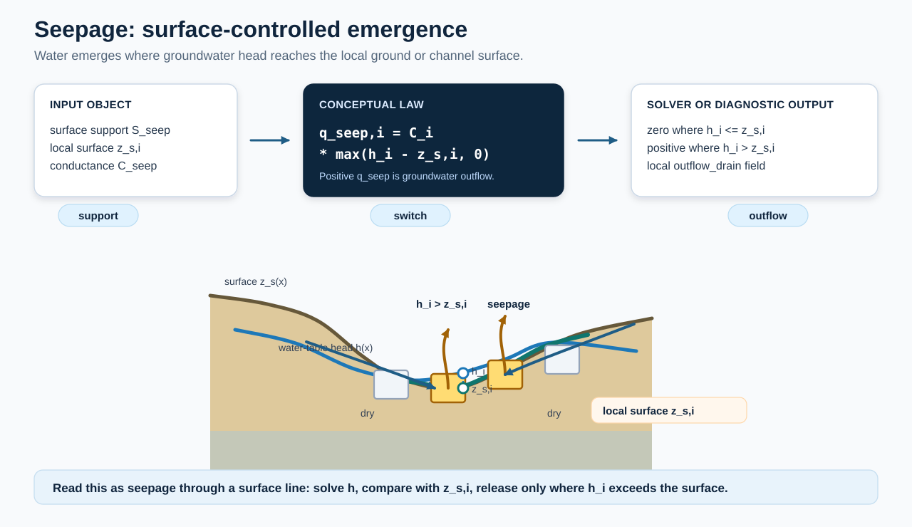
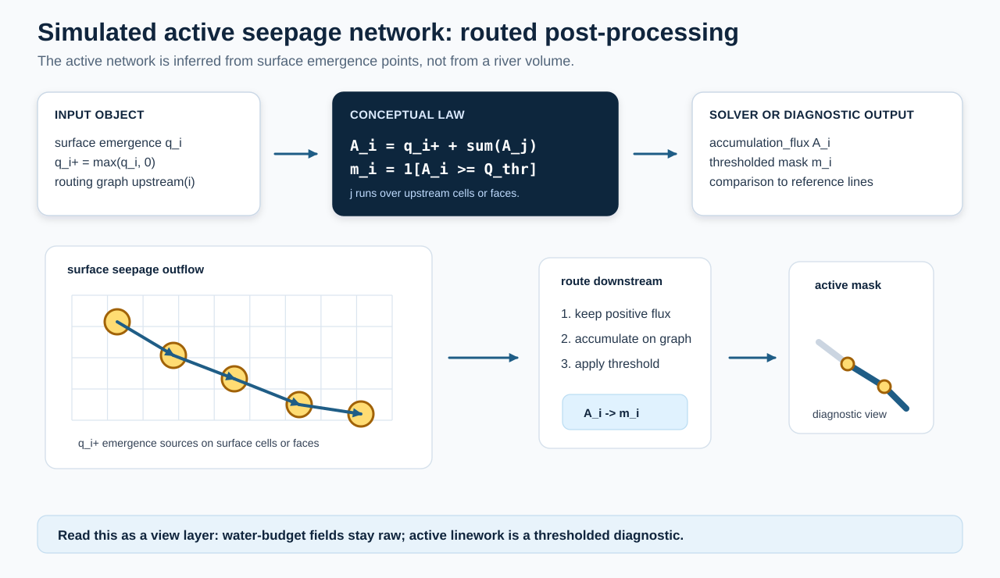
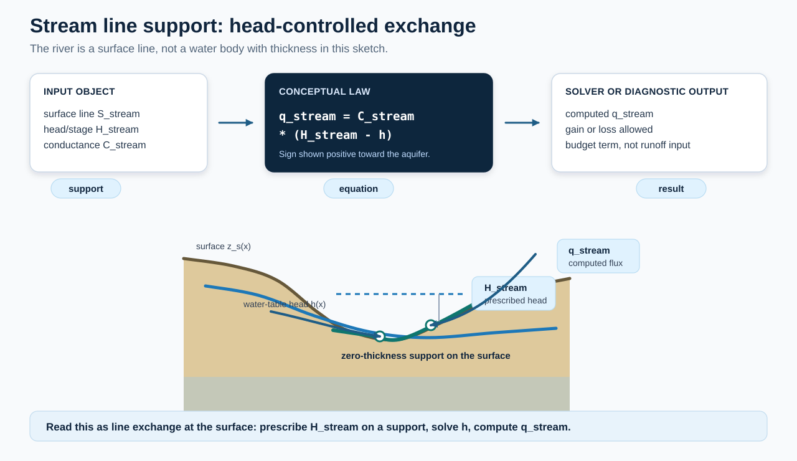

How the model makes streams#
HydroModPy does not draw rivers. It computes a water table. Where the water table reaches the ground, water leaves the aquifer. Those exits are the sources of the streams, and the stream network is what they generate downhill.
This page follows that chain: the exits, the network they generate, why the network breathes with the seasons, and how it is compared with a map. It uses no equation. The equations are in Downslope distance between two networks.
Where the water table reaches the ground#
With the drainage condition, the model places a drain in every cell that has no fixed head, at the elevation of the ground. A drain lets water out when the water table rises to the ground surface, and in that direction only. Water that has left does not come back, and a river does not feed the aquifer in this setup.


Fig. 10 Look at: the cells where the head of the water table is above the ground line: only they release water. Does not show: how much water a drain releases, or a real catchment.#
How much water a drain passes for a given rise of the water table depends on the hydraulic conductivity K of the cell: the more permeable the ground, the more freely it drains. The drain is not a free exit. Unless you declare a conductance, the model derives it from K and from the thickness of the clogging layer of the drain bed (the thin, less permeable film that lines a stream bed). The drain follows K, and this is why the extent of the network carries information on K.
In example 04, drains are the only way water leaves the aquifer: the list of boundary conditions of the model names the drain and nothing else.
A seepage cell is a point, not a stream#
A cell where the aquifer gives water back to the ground is a seepage cell. It is a point where water appears, a spring, and not a stretch of river. Isolated cells and short lines of cells are normal.


Fig. 11 Indicative Look at: the isolated blue cells, each a point where water leaves the aquifer. Does not show: any stream, which is drawn in the next step.#
The seepage_map of example 04, October 2002, the driest month of the series according to the
comments of the example file (Reading the results).
The map above shows the raw state of the water table. For the network, the model asks a
slightly different question: how much water leaves the cell. A cell counts as a source when it
gives back more than a small share of the mean recharge over its area
(the seepage threshold). The test is
made on the flux because the water budget fixes the flux, while “the head touches the ground”
is a geometric condition that changes a lot when the drain conductance moves. The setting
is tau_specific_ratio.
Seepage cells draw the network#
The water that leaves the aquifer in a seepage cell flows downhill over the ground. The simulated network is every cell this water goes through, from each source as far as the slope leads it. The slope is the one of the digital elevation model, read on the model cells. Pits (cells lower than all their neighbours, where water would be trapped) are filled first, so that every cell has a way down.


Fig. 12 Look at: the order of the steps: sources, routing downstream, then a threshold that gives the active network. Does not show: a river volume. The network is a view drawn after the computation, and the water budget fields stay untouched.#


Fig. 13 Indicative Look at: the blue trunk and the orange upstream ends. Does not show: which reaches dry up in the field.#
The flow_intermittence_map of example 04, year 2002, from the calibrated run. Blue cells flow
every month of the year, orange cells some months, gray cells never.
Three things follow from this construction.
The network has no width, depth or velocity. In the drain setup, the model does not compute the river. A cell “flows” means that the aquifer feeds it, directly or from upstream. There is no water level, no flood and no travel time in the channel. The routed streams described below are the exception.
Its shape depends on the relief. A coarser cell size or a different digital elevation model moves the paths. A stream occupies one cell, so a map is read at the scale of the hillside, not of the field (see resolution).
A flow threshold keeps only cells that carry water. On the flow maps, a downstream cell flows only if the water routed to it reaches a minimum discharge (the visible flow). It is a convention. See visible flow.
Why the network grows in winter and shrinks in summer#
The recharge feeds the water table. In winter the recharge is large and the water table rises. More cells reach the ground and give back water above the threshold, and the water of each of them reaches farther downhill. In summer the recharge is small, the water table drops, and the sources retreat toward the valley bottoms. The upstream ends of the streams dry up first, and only the reaches fed by the lowest water table keep flowing.
The model repeats this at every stress period, a month in example 04. For each period it finds the seepage cells, draws the network, and counts the cells that flow. Over a year, a cell is then:
perennial, if it flows at every time step of the year;
intermittent, if it flows at some time steps and not all;
dry, if it never flows.
Example 04 shows it. The comment of its configuration file says that the seepage cells and the active network expand and contract with the wet winters and the dry summers. The maps of the example draw October 2002 because it is the driest month of the record.
Two limits come with a monthly step. A reach that dries up for two weeks does not appear, and “intermittent” means dry for at least one time step.
What sets the size of the network#
Two quantities compete: how fast the ground carries water away (K) and how much water arrives (the recharge). If the ground is permeable compared with the recharge, the water table stays deep, and the network retracts into the valley bottoms. If it is not, the water table reaches the ground on the hillsides, and the network reaches the upper slopes. The extent of the network is a function of the ratio of K to the recharge. This is what the calibration on the stream network exploits (Downslope distance between two networks). In example 04, the discharge at the outlet does not tell values of K apart, but the extent of the seepage does.
What else can take water out#
The drain is the way the model lets the aquifer produce streams. Other conditions exist, and they answer other questions. They should not be confused with it.
You want |
The model uses |
What you give |
What the model computes |
|---|---|---|---|
The model to decide where water emerges |
A drain at the ground (the default) |
Nothing, or a drain conductance ( |
Where the water table reaches the ground, and how much water leaves |
To impose the water level of a river on known cells |
A fixed-head stream boundary ( |
The head, on the cells tagged as river |
The exchange with the aquifer, in either direction |
The water that leaves to travel down a river |
A routed stream network ([flow.sinks_sources.sfr]) |
The reaches and their properties |
The routing of the water along the reaches |
A lake whose level moves |
A lake package ([flow.sinks_sources.lakes]) |
A footprint and a stage-volume-area table |
The stage and the exchange with the aquifer |
The stream boundary is not available with MODFLOW-NWT. It prescribes a level: it supposes you know where the river is and how high its water stands. A drain supposes neither. Choose the drain when the network is the question.


Fig. 14 Look at: the direction of the arrows. With a stream boundary, you impose the water level of the river and the model computes the exchange. Does not show: the drain, which decides by itself where water comes out.#
Whatever the condition, the network is read from the same quantity: the water the aquifer releases to the surface in each cell, summed over every condition that releases water.
Comparing with a mapped network#
A mapped network is the set of streams drawn on a map, such as the permanent reaches of the BD TOPO. It is a reference. The model never receives it.
It is not burned into the relief.
It does not place drains.
It does not set K.
The model is built from the relief, the geology, the recharge and the thickness. The map is read afterwards, to score and to draw (Reading the results). You declare it as a data source ([data.hydrography]), and the code treats it as a diagnostic, not as a model input.
To compare the two networks, the lines of the map are first placed on the model cells.
By default HydroModPy keeps only the places where the map says a stream starts, and lets the
slope of the model draw the path below them
(observed_rasterization). Field ditches and rectified
reaches follow paths that a model on a digital elevation model cannot reproduce, and drawn
cell by cell they would count as errors of the model.
Then the comparison goes both ways, along the slope.
From each cell of the simulated network, follow the slope down until you meet the mapped network. A long walk means the model makes a stream where the map has none: an excess.
From each cell of the mapped network, follow the slope down until you meet the simulated network. A long walk means the model misses a stream of the map: a deficit.
When K increases, the simulated network retracts and the deficit grows. When K decreases, the network spreads and the excess grows. The calibration looks for the value of K where the two mean walks are equal. Scoring a simulated stream network says how to read these scores, and Downslope distance between two networks defines the distances.
Calibrating on the map is not validating against it. The agreement of a calibrated run with the map is what the calibration looked for.
What the network is not#
It is not a river model. In the drain setup there is no hydraulics in the channel.
It is not a budget term. The water that leaves the aquifer is the release of the drains. The network is a way to read where it leaves and where it goes.
It is not a measurement. It becomes evidence only through a comparison with a map that the calibration has not seen.
It is not a line. It is a set of cells, one set for each time step.
Where to go next#
Reading the results: the maps of example 04, one by one.
Scoring a simulated stream network: how a simulated network is scored.
[calibration.outputs]: the network criterion of a calibration.
Downslope distance between two networks: the distances and the criterion, with equations.
How water leaves the aquifer: how water leaves the aquifer.